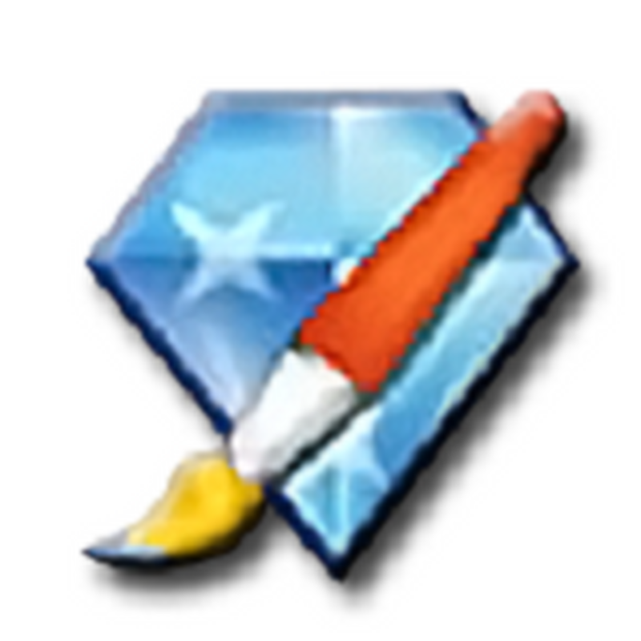
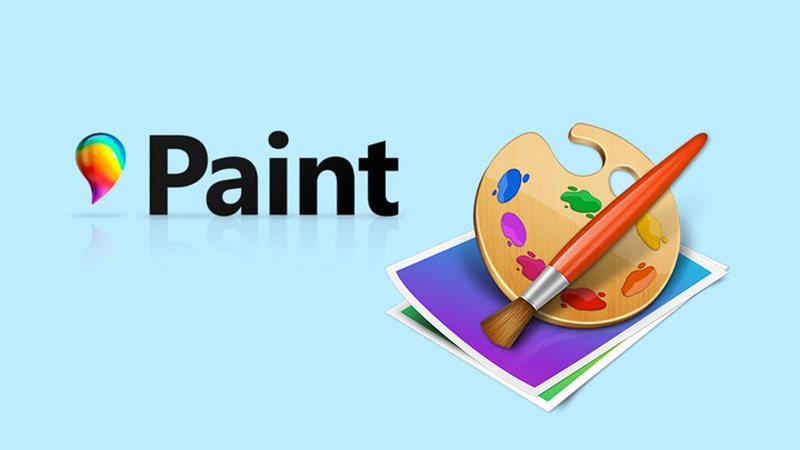

Retouch Photo простой графический редактор главное его примущество
это геометрические фигуры с поможью которых легко делать шаблоны для
сайтов и прочего
тоже очень хороший графический редактор который очень похож на програму
"Microsoft Paint" но намного современей своего сообрата главное его премущество
очень простой и гибкий интерфейс
старый графический редактор один из первых кто зародил подобную тематику
главное премущество это то что из за него и пошла эта история
графического дизайна
